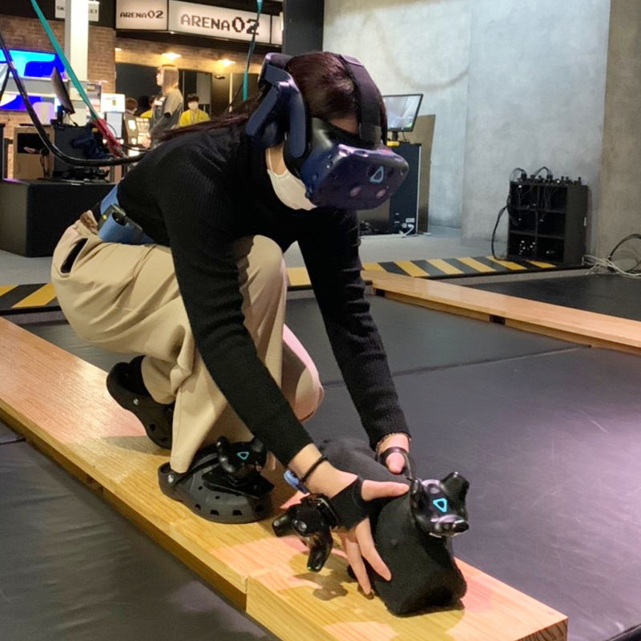

home.
about
このサイトは 北條 結衣 のポートフォリオサイトです。
制作物や日々勉強したことを掲載しています。
profile

21歳。栃木県出身。
大学の勉強とは別に独学でWEBサイトの勉強を始めました。
フロントエンドエンジニアとして就職したいと思っています。
たくさんの人に商品やコンテンツ,サービスの魅力が届くような
WEBサイトが作れるようになりたいです。
よろしくお願いいたします。
＜趣味＞
リアル脱出ゲーム
ゲーム制作
デジタルイラスト制作
画集や設定資料の収集
＜学んだ言語＞
C++, C#, HTML, CSS, JavaScript